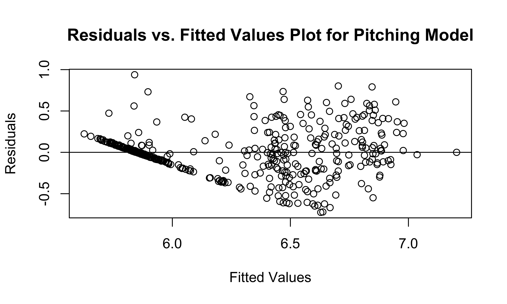
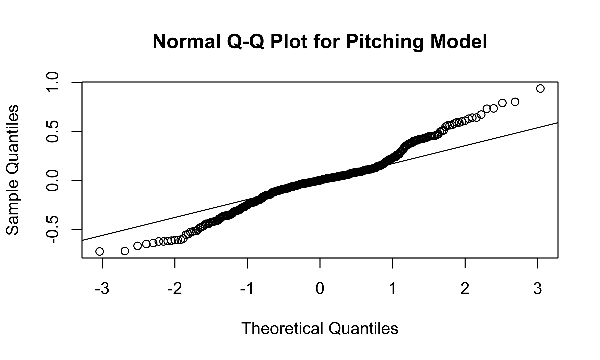

lm_pitching = lm(log10(salary_2022) ~ hand + pitcher_type + hand*pitcher_type + ip_total + era_2 + bb9 + so9 + experience_group,
data = merged_pitching)
broom::tidy(lm_pitching)| term | estimate | std.error | statistic | p.value |
|---|---|---|---|---|
| (Intercept) | 6.5815420 | 0.3024707 | 21.759271 | 0.0000000 |
| handrhp | -0.4242111 | 0.3054319 | -1.388890 | 0.1656240 |
| pitcher_typer | -0.8528043 | 0.2839805 | -3.003038 | 0.0028375 |
| pitcher_types | -0.5941512 | 0.2867592 | -2.071952 | 0.0388977 |
| ip_total | 0.0014225 | 0.0003437 | 4.138882 | 0.0000424 |
| era_2 | -0.0004776 | 0.0002877 | -1.659882 | 0.0977066 |
| bb9 | -0.0377370 | 0.0128069 | -2.946623 | 0.0033969 |
| so9 | 0.0247501 | 0.0072925 | 3.393930 | 0.0007564 |
| experience_group3+ years | 0.6080049 | 0.0299496 | 20.300925 | 0.0000000 |
| handrhp:pitcher_typer | 0.4144199 | 0.3072509 | 1.348800 | 0.1781494 |
| handrhp:pitcher_types | 0.3405457 | 0.3101460 | 1.098017 | 0.2728445 |
broom::glance(lm_pitching)| r.squared | adj.r.squared | sigma | statistic | p.value | df | logLik | AIC | BIC | deviance | df.residual | nobs |
|---|---|---|---|---|---|---|---|---|---|---|---|
| 0.6770215 | 0.6691053 | 0.2785755 | 85.52419 | 0 | 10 | -53.45206 | 130.9041 | 179.3586 | 31.66256 | 408 | 419 |
plot(residuals(lm_pitching) ~ fitted.values(lm_pitching),
main = "Residuals vs. Fitted Values Plot for Pitching Model",
xlab = "Fitted Values",
ylab = "Residuals")
abline(h = 0)
qqnorm(residuals(lm_pitching),
main = "Normal Q-Q Plot for Pitching Model")
qqline(residuals(lm_pitching))
We decided to log-transform the salary variable because it is heavily
right-skewed, and decided to use \(log_{10}\) instead of \(ln\) for the sake of interpretability. We
included ERA+, the measure of a pitcher’s ERA relative to the league
average, as well as innings pitched (ip_total), walks per
nine innings (bb9) and strikeouts per nine innings
(so9); we used walks/strikeouts per nine innings since the
total number of walks/strikeouts would be highly correlated with the
number of innings pitched.
We accounted for pitcher handedness (right vs. left) as well as pitcher type (the default type is a closing pitcher, with relief pitchers and starting pitchers also included in the model). Finally, we explored the interaction between handedness and pitcher type to see if pitcher type affects the relationship between handedness and salary.
From our model, we can see that pitcher handedness and pitcher type
have no significant effect on expected salary. Interestingly, the
era_2 predictor, even when accounting for pitcher
handedness, pitcher type, and the number of innings pitched, has an
insignificant \(P\)-value, implying
that there is no significant association between one of the most highly
regarded summative statistics for pitching effectiveness and pitcher
salary when accounting for pitcher handedness, pitcher type, innings
pitched, walk and strikeout rates, and service time.
The residuals vs. fitted values plot shows that the residuals are generally evenly spread out; the straight line on the left side of the plot represents the large number of MLB players who are still on their rookie contracts, and therefore have a low fitted value (as they usually make between $700,000 and $1,000,000 per year, which is quite low by MLB standards). The Normal Q-Q plot shows that the model’s residuals deviate only slightly from Normal behavior.
merged_pitching |>
modelr::add_predictions(lm_pitching) |>
modelr::add_residuals(lm_pitching) |>
arrange(resid) |>
select(name, salary_2022, service_time_floor, experience_group, era_2, pred, resid ) |>
mutate(expected_salary = 10^pred) |>
slice(1:5) | name | salary_2022 | service_time_floor | experience_group | era_2 | pred | resid | expected_salary |
|---|---|---|---|---|---|---|---|
| Drew Hutchison | 800000 | 4 | 3+ years | 85 | 6.628671 | -0.7255811 | 4252762 |
| Ryan Borucki | 825000 | 3 | 3+ years | 68 | 6.637406 | -0.7209523 | 4339166 |
| Trevor Richards | 1000000 | 3 | 3+ years | 72 | 6.668099 | -0.6680993 | 4656926 |
| Sean Newcomb | 900000 | 3 | 3+ years | 48 | 6.603083 | -0.6488400 | 4009429 |
| Jeffrey Springs | 947500 | 3 | 3+ years | 150 | 6.615970 | -0.6393911 | 4130192 |
merged_pitching |>
modelr::add_predictions(lm_pitching) |>
modelr::add_residuals(lm_pitching) |>
arrange(desc(salary_2022)) |>
select(name, salary_2022, service_time_floor, experience_group, era_2, pred, resid ) |>
mutate(expected_salary = 10^pred) |>
slice(1:10) | name | salary_2022 | service_time_floor | experience_group | era_2 | pred | resid | expected_salary |
|---|---|---|---|---|---|---|---|
| Max Scherzer | 43333333 | 13 | 3+ years | 169 | 6.845976 | 0.7908462 | 7014163 |
| Gerrit Cole | 36000000 | 8 | 3+ years | 110 | 6.946254 | 0.6100489 | 8835957 |
| David Price | 32000000 | 11 | 3+ years | 167 | 6.702960 | 0.8021897 | 5046151 |
| Jacob deGrom | 27257728 | 7 | 3+ years | 126 | 6.855482 | 0.5800073 | 7169392 |
| Zack Wheeler | 26000000 | 8 | 3+ years | 142 | 6.823685 | 0.5912886 | 6663229 |
| Justin Verlander | 25000000 | 16 | 3+ years | 218 | 6.835075 | 0.5628650 | 6840298 |
| Marcus Stroman | 25000000 | 7 | 3+ years | 117 | 6.756888 | 0.6410518 | 5713316 |
| Patrick Corbin | 23416667 | 9 | 3+ years | 62 | 6.859146 | 0.5103788 | 7230134 |
| Madison Bumgarner | 21882892 | 11 | 3+ years | 82 | 6.834678 | 0.5054269 | 6834044 |
| Carlos Rodon | 21500000 | 6 | 3+ years | 138 | 6.981582 | 0.3508561 | 9584786 |